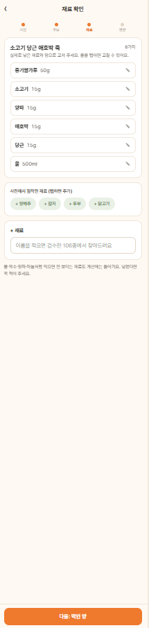

시판 이유식에는 영양성분표가 있습니다.집에서 만든 이유식에는 없습니다.
사진 한 장, 확인 한 번,
그 한 끼의 영양
찍으면 비슷한 이유식 후보를 3개 보여드려요. AI는 양을 짐작하지 않고, 실제 레시피의 재료를 그대로 가져와요.

넣은 재료와 먹인 양을 고쳐 주세요. 처음 한 번뿐이에요. 다음부턴 "저번처럼"으로 20초.
이유식이 담당할 몫 기준으로 얼마나 채웠는지, 부족하면 무엇을 곁들일지 한 줄로.
숫자 대신, 오늘 할 수 있는 한 줄
하루 권장량 전체가 아니라 이유식이 담당할 몫과 비교해요. 모든 이유식이 부족해 보이는 착시가 없어요.
채우라고 권하지 않아요. 넘었을 때만 빨간 막대와 문구로 알려드려요.
등록되지 않은 재료나 "적당량"은 짐작하지 않아요. 무엇이 빠졌는지 화면에 그대로 보여드려요.
기준이 차별점입니다
공공 데이터를 그대로 검색하는 대신, 이유식에 실제로 쓰이는 재료를 따로 검수하고 월령별 기준을 코드로 고정했습니다.
식약처·농진청 식품 영양 데이터를 지식그래프로 연결
이유식 재료 사전을 별도 검수. "닭가슴살"이 훈제 가공품으로 잡히는 오류를 막습니다
한국인 영양소 섭취기준을 6~11, 12~23, 24~35개월 구간별로 적용
하루 필요량 중 이유식이 담당할 몫을 따로 계산. 모유·분유 몫까지 이유식에 요구하지 않습니다
슬라이드가 아니라 서버에서 돌아갑니다
집 이유식 영양 계산
재료 목록 → 한 끼 영양 → 월령별 권장량 대비 → 부족 영양소 보완 식품 추천. 자동 테스트로 계산 규칙을 고정.
시판 제품 바코드 조회
가공식품·이유식·건강기능식품의 영양성분을 바코드로 불러와 같은 기준으로 비교.
기저귀 색 분석
대·소변 색을 정상 범위/주의/병원 권유 단계로 나눠 참고 정보를 제공. 서버 AI 호출 없이 처리.
사진 → 레시피 후보 검색
레시피 500여 건을 색인해 후보를 보여줍니다. 부모가 확정한 재료가 쌓일수록 다음 모델이 정확해지는 구조.
대변 화학 측정 키트
색만으로는 한계가 있어, 먹은 것과 나온 것을 실제 측정으로 잇는 소형 리더와 소모품을 설계했습니다.
웹·모바일 앱 공개 베타
부모 100명과 함께 "직접 만든 이유식의 영양이 궁금하다"는 가설을 검증합니다.
 수상 이미지 자리
수상 이미지 자리assets/award.jpg
영유아 섭취·배출 데이터 기반 영양 관리 아이템으로 수상. 지원금으로 서버와 앱 개발을 진행 중입니다. 소아청소년과 전문의 자문(2026.06)에서 "부모가 원하는 서비스"라는 확인을 받았습니다.
자동 테스트 250여 개가 계산 규칙을 고정합니다. 이 페이지의 결과 예시는 실제 서버 응답에서 가져온 문장입니다.
AI·바이오·임상규제, 세 사람
중앙대학교 시스템생명공학과 재학생으로 구성된 예비창업팀입니다. 데이터 기준값은 팀이 직접 조사하고, 의학적 판단은 소아청소년과 전문의 자문을 받습니다.
 차
차차태환
기획 총괄. 지식그래프·영양 계산 파이프라인·사진 검색 구현.
 강
강강지호
월령별 권장섭취량 검토, 영양소 매핑과 추천 로직 자문.
 정
정정선미
의학적 근거 검토, 의료기기 해당성과 표현 가이드, 개인정보.
소아청소년과 전문의 자문(2026.06) · 결과 문구는 배포 전 임상·규제 담당이 검토합니다.
6~36개월 아이에게 직접 만든 이유식을 먹이고 계신가요?
9월 공개 베타에 함께해 주실 부모님 100명을 모십니다. 아이 월령과 이메일, 이유식을 직접 만드는 횟수만 알려 주시면 순서대로 안내드려요.
한 끼를 기록하는 데 30초. 매일 만드는 그 한 끼가 아이 월령 기준으로 얼마나 채워졌는지, 함께 확인해 봐요.
메일로도 받아요 · chayoyo3@gmail.com